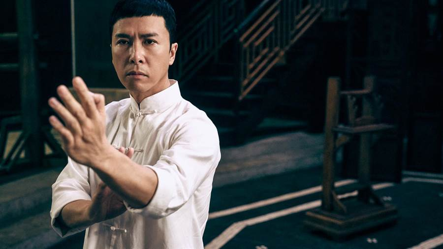
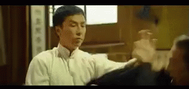
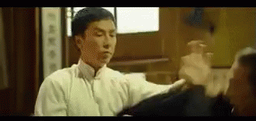

Ip Man, also known as Yip Man, (Chinese: 葉問; 1 October 1893 – 2 December 1972) was a Chinese martial artist of Canton ancestry, and a master teacher of Wing Chun Kung Fu. He had several students who later became martial arts masters in their own right. His most famous student was Bruce Lee.
Wing Chun is a Chinese traditional martial art. It is a technology to stop the invasion. It is a positive and streamlined legitimate defense system and a legal use of force. Compared with other traditional Chinese martial arts, it is more focused on subduing opponents as soon as possible to minimize the damage of the parties.
 

Return to the top of the page